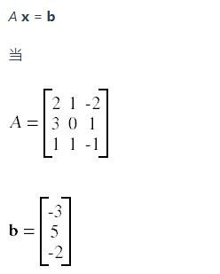
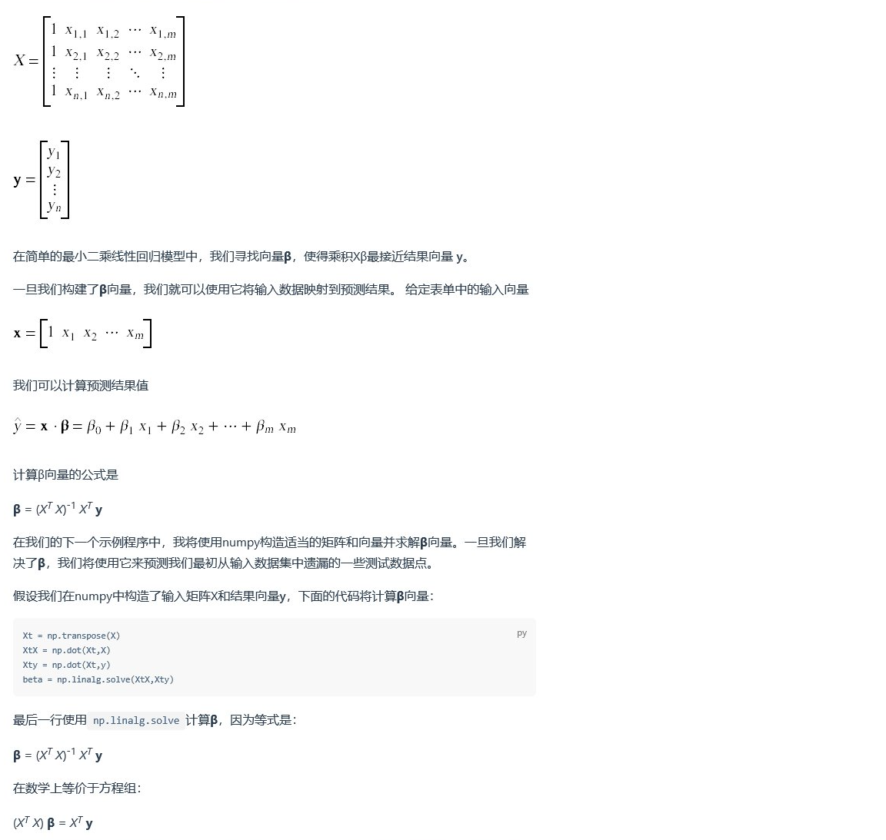

<!DOCTYPE html>


<html lang="zh-CN">


<head>
  <meta charset="utf-8" />
    
  <meta name="viewport" content="width=device-width, initial-scale=1, maximum-scale=1" />
  <title>
    numpy学习笔记 |  VincereZhou&#39;s blog
  </title>
  <meta name="generator" content="hexo-theme-ayer">
  
  <link rel="shortcut icon" href="/images/mojie.jpg" />
  
  
<link rel="stylesheet" href="/dist/main.css">

  <link rel="stylesheet" href="https://cdn.jsdelivr.net/gh/Shen-Yu/cdn/css/remixicon.min.css">
  
<link rel="stylesheet" href="/css/custom.css">

  
  <script src="https://cdn.jsdelivr.net/npm/pace-js@1.0.2/pace.min.js"></script>
  
  

  

<link rel="alternate" href="/atom.xml" title="VincereZhou's blog" type="application/atom+xml">
</head>

</html>

<body>
  <div id="app">
    
      
    <main class="content on">
      <section class="outer">
  <article
  id="post-numpy学习笔记"
  class="article article-type-post"
  itemscope
  itemprop="blogPost"
  data-scroll-reveal
>
  <div class="article-inner">
    
    <header class="article-header">
       
<h1 class="article-title sea-center" style="border-left:0" itemprop="name">
  numpy学习笔记
</h1>
 

    </header>
     
    <div class="article-meta">
      <a href="/posts/40de7965/" class="article-date">
  <time datetime="2021-04-25T03:39:15.000Z" itemprop="datePublished">2021-04-25</time>
</a> 
  <div class="article-category">
    <a class="article-category-link" href="/categories/%E6%95%B0%E6%8D%AE%E5%88%86%E6%9E%90/">数据分析</a> / <a class="article-category-link" href="/categories/%E6%95%B0%E6%8D%AE%E5%88%86%E6%9E%90/python/">python</a>
  </div>
  
<div class="word_count">
    <span class="post-time">
        <span class="post-meta-item-icon">
            <i class="ri-quill-pen-line"></i>
            <span class="post-meta-item-text"> 字数统计:</span>
            <span class="post-count">2.3k</span>
        </span>
    </span>

    <span class="post-time">
        &nbsp; | &nbsp;
        <span class="post-meta-item-icon">
            <i class="ri-book-open-line"></i>
            <span class="post-meta-item-text"> 阅读时长≈</span>
            <span class="post-count">10 分钟</span>
        </span>
    </span>
</div>
 
    </div>
      
    <div class="tocbot"></div>


  
    <div class="article-entry" itemprop="articleBody">
       
  <p>numpy 是python的一个包，是处理数组的工具。</p>
<span id="more"></span>
<h1>数组基础</h1>
<p>在numpy中采用array属性创建数组，里面可以传递任何序列。</p>
<figure class="highlight python"><table><tr><td class="gutter"><pre><span class="line">1</span><br><span class="line">2</span><br><span class="line">3</span><br><span class="line">4</span><br><span class="line">5</span><br><span class="line">6</span><br><span class="line">7</span><br><span class="line">8</span><br><span class="line">9</span><br><span class="line">10</span><br><span class="line">11</span><br><span class="line">12</span><br></pre></td><td class="code"><pre><span class="line">a = np.array([<span class="number">0</span>, <span class="number">1</span>, <span class="number">2</span>, <span class="number">3</span>, <span class="number">4</span>])</span><br><span class="line">b = np.array((<span class="number">0</span>, <span class="number">1</span>, <span class="number">2</span>, <span class="number">3</span>, <span class="number">4</span>))</span><br><span class="line">c = np.arange(<span class="number">5</span>)</span><br><span class="line">d = np.linspace(<span class="number">0</span>, <span class="number">2</span>*np.pi, <span class="number">5</span>) <span class="comment"># [0.         1.57079633 3.14159265 4.71238898 6.28318531]</span></span><br><span class="line"><span class="comment"># linspace 表示从开始值到结束值，均匀地创造n个值（包括两端）。</span></span><br><span class="line"><span class="comment"># np.pi 为Π值。</span></span><br><span class="line"></span><br><span class="line"><span class="built_in">print</span>(a) </span><br><span class="line"><span class="built_in">print</span>(b) </span><br><span class="line"><span class="built_in">print</span>(c) </span><br><span class="line"><span class="built_in">print</span>(d) </span><br><span class="line"><span class="built_in">print</span>(a[<span class="number">3</span>]) </span><br></pre></td></tr></table></figure>
<ul>
<li>shape 函数查看数组结构（2，3）表示2行3列。</li>
</ul>
<p>其他创建数组的函数：</p>
<ul>
<li>a = np.zeros((2,2))  # 2×2 的 全为0 的矩阵</li>
<li>a = np.ones((1,2))  # 全为1 的矩阵</li>
<li>a = np.full((2,2),7)  # 全为7 的矩阵</li>
<li>a = np.eye(2)    # 2×2 的单位阵</li>
<li>e = np.random.random((2,2))  # 0到1之间的随机元素</li>
</ul>
<h2 id="创建矩阵">创建矩阵</h2>
<figure class="highlight python"><table><tr><td class="gutter"><pre><span class="line">1</span><br><span class="line">2</span><br><span class="line">3</span><br><span class="line">4</span><br><span class="line">5</span><br><span class="line">6</span><br><span class="line">7</span><br></pre></td><td class="code"><pre><span class="line">a = np.array([[<span class="number">11</span>, <span class="number">12</span>, <span class="number">13</span>, <span class="number">14</span>, <span class="number">15</span>],</span><br><span class="line">              [<span class="number">16</span>, <span class="number">17</span>, <span class="number">18</span>, <span class="number">19</span>, <span class="number">20</span>],</span><br><span class="line">              [<span class="number">21</span>, <span class="number">22</span>, <span class="number">23</span>, <span class="number">24</span>, <span class="number">25</span>],</span><br><span class="line">              [<span class="number">26</span>, <span class="number">27</span>, <span class="number">28</span> ,<span class="number">29</span>, <span class="number">30</span>],</span><br><span class="line">              [<span class="number">31</span>, <span class="number">32</span>, <span class="number">33</span>, <span class="number">34</span>, <span class="number">35</span>]])</span><br><span class="line"> </span><br><span class="line"><span class="built_in">print</span>(a[<span class="number">2</span>,<span class="number">4</span>]) <span class="comment">#索引都是从0开始 </span></span><br></pre></td></tr></table></figure>
<h2 id="数组索引">数组索引</h2>
<figure class="highlight python"><table><tr><td class="gutter"><pre><span class="line">1</span><br><span class="line">2</span><br><span class="line">3</span><br><span class="line">4</span><br></pre></td><td class="code"><pre><span class="line"><span class="built_in">print</span>(a[<span class="number">0</span>, <span class="number">1</span>:<span class="number">4</span>]) </span><br><span class="line"><span class="built_in">print</span>(a[<span class="number">1</span>:<span class="number">4</span>, <span class="number">0</span>]) </span><br><span class="line"><span class="built_in">print</span>(a[::<span class="number">2</span>,::<span class="number">2</span>]) <span class="comment">#行和列每隔一个qu                  </span></span><br><span class="line"><span class="built_in">print</span>(a[:, <span class="number">1</span>]) </span><br></pre></td></tr></table></figure>
<h2 id="数组属性">数组属性</h2>
<figure class="highlight python"><table><tr><td class="gutter"><pre><span class="line">1</span><br><span class="line">2</span><br><span class="line">3</span><br><span class="line">4</span><br><span class="line">5</span><br><span class="line">6</span><br><span class="line">7</span><br><span class="line">8</span><br><span class="line">9</span><br><span class="line">10</span><br><span class="line">11</span><br><span class="line">12</span><br><span class="line">13</span><br></pre></td><td class="code"><pre><span class="line">a = np.array([[<span class="number">11</span>, <span class="number">12</span>, <span class="number">13</span>, <span class="number">14</span>, <span class="number">15</span>],</span><br><span class="line">              [<span class="number">16</span>, <span class="number">17</span>, <span class="number">18</span>, <span class="number">19</span>, <span class="number">20</span>],</span><br><span class="line">              [<span class="number">21</span>, <span class="number">22</span>, <span class="number">23</span>, <span class="number">24</span>, <span class="number">25</span>],</span><br><span class="line">              [<span class="number">26</span>, <span class="number">27</span>, <span class="number">28</span> ,<span class="number">29</span>, <span class="number">30</span>],</span><br><span class="line">              [<span class="number">31</span>, <span class="number">32</span>, <span class="number">33</span>, <span class="number">34</span>, <span class="number">35</span>]])</span><br><span class="line"></span><br><span class="line"><span class="built_in">print</span>(<span class="built_in">type</span>(a)) <span class="comment"># &gt;&gt;&gt;&lt;class &#x27;numpy.ndarray&#x27;&gt;</span></span><br><span class="line"><span class="built_in">print</span>(a.dtype) <span class="comment"># &gt;&gt;&gt;int64</span></span><br><span class="line"><span class="built_in">print</span>(a.size) <span class="comment"># &gt;&gt;&gt;25 总共元素个数</span></span><br><span class="line"><span class="built_in">print</span>(a.shape) <span class="comment"># &gt;&gt;&gt;(5, 5)</span></span><br><span class="line"><span class="built_in">print</span>(a.itemsize) <span class="comment"># &gt;&gt;&gt;8 每个元素的字节数 int64就是8字节</span></span><br><span class="line"><span class="built_in">print</span>(a.ndim) <span class="comment"># &gt;&gt;&gt;2 维度</span></span><br><span class="line"><span class="built_in">print</span>(a.nbytes) <span class="comment"># &gt;&gt;&gt;200 总字节数 25*8=200</span></span><br></pre></td></tr></table></figure>
<h2 id="切片">切片</h2>
<p>np.array 里，如果是矩阵，那么每一个子元素是<strong>一行</strong>。也就是，默认按行排布。切边时也一样。</p>
<figure class="highlight python"><table><tr><td class="gutter"><pre><span class="line">1</span><br><span class="line">2</span><br><span class="line">3</span><br><span class="line">4</span><br><span class="line">5</span><br><span class="line">6</span><br><span class="line">7</span><br></pre></td><td class="code"><pre><span class="line">a = np.array([[<span class="number">1</span>,<span class="number">2</span>,<span class="number">3</span>,<span class="number">4</span>],[<span class="number">5</span>,<span class="number">6</span>,<span class="number">7</span>,<span class="number">8</span>],[<span class="number">9</span>,<span class="number">10</span>,<span class="number">11</span>,<span class="number">12</span>]])</span><br><span class="line">b = a[:<span class="number">2</span>,<span class="number">1</span>:<span class="number">3</span>]  </span><br><span class="line"></span><br><span class="line"><span class="built_in">print</span>(b)</span><br><span class="line"><span class="built_in">print</span>(a[<span class="number">0</span>,<span class="number">1</span>])</span><br><span class="line">b[<span class="number">0</span>,<span class="number">0</span>] = <span class="number">77</span></span><br><span class="line"><span class="built_in">print</span>(a[<span class="number">0</span>,<span class="number">1</span>])</span><br></pre></td></tr></table></figure>
<p>这里，还可以将整数索引和切片索引混合使用。但是这样做，会造成<strong>降维打击</strong>（由矩阵变为向量）。</p>
<figure class="highlight python"><table><tr><td class="gutter"><pre><span class="line">1</span><br><span class="line">2</span><br><span class="line">3</span><br><span class="line">4</span><br><span class="line">5</span><br><span class="line">6</span><br></pre></td><td class="code"><pre><span class="line">a = np.array([[<span class="number">1</span>,<span class="number">2</span>,<span class="number">3</span>,<span class="number">4</span>],[<span class="number">5</span>,<span class="number">6</span>,<span class="number">7</span>,<span class="number">8</span>],[<span class="number">9</span>,<span class="number">10</span>,<span class="number">11</span>,<span class="number">12</span>]])</span><br><span class="line"></span><br><span class="line">row_r1 = a[<span class="number">1</span>,:]</span><br><span class="line">row_r2 = a[<span class="number">1</span>:<span class="number">2</span>,:] <span class="comment">#这样写就不会降维，还是矩阵</span></span><br><span class="line"><span class="built_in">print</span>(row_r1,row_r1.shape) <span class="comment"># （4，）</span></span><br><span class="line"><span class="built_in">print</span>(row_r2,row_r2.shape) <span class="comment"># （1，4）</span></span><br></pre></td></tr></table></figure>
<h3 id="整数数组索引">整数数组索引</h3>
<figure class="highlight python"><table><tr><td class="gutter"><pre><span class="line">1</span><br><span class="line">2</span><br><span class="line">3</span><br><span class="line">4</span><br><span class="line">5</span><br><span class="line">6</span><br><span class="line">7</span><br><span class="line">8</span><br></pre></td><td class="code"><pre><span class="line">a = np.array([[<span class="number">1</span>,<span class="number">2</span>], [<span class="number">3</span>, <span class="number">4</span>], [<span class="number">5</span>, <span class="number">6</span>]])</span><br><span class="line"></span><br><span class="line"></span><br><span class="line"></span><br><span class="line"><span class="built_in">print</span>(a[[<span class="number">0</span>, <span class="number">1</span>, <span class="number">2</span>], [<span class="number">0</span>, <span class="number">1</span>, <span class="number">0</span>]])  <span class="comment">#上下结果相同，就是不同写法。a[[0,1,2],[0,1,0]]</span></span><br><span class="line"></span><br><span class="line"></span><br><span class="line"><span class="built_in">print</span>(np.array([a[<span class="number">0</span>, <span class="number">0</span>], a[<span class="number">1</span>, <span class="number">1</span>], a[<span class="number">2</span>, <span class="number">0</span>]]))  </span><br></pre></td></tr></table></figure>
<h3 id="花式索引">花式索引</h3>
<figure class="highlight python"><table><tr><td class="gutter"><pre><span class="line">1</span><br><span class="line">2</span><br><span class="line">3</span><br><span class="line">4</span><br><span class="line">5</span><br></pre></td><td class="code"><pre><span class="line">a = np.arange(<span class="number">0</span>, <span class="number">100</span>, <span class="number">10</span>)</span><br><span class="line">indices = [<span class="number">1</span>, <span class="number">5</span>, -<span class="number">1</span>]</span><br><span class="line">b = a[indices]</span><br><span class="line"><span class="built_in">print</span>(a) <span class="comment"># &gt;&gt;&gt;[ 0 10 20 30 40 50 60 70 80 90]</span></span><br><span class="line"><span class="built_in">print</span>(b) <span class="comment"># &gt;&gt;&gt;[10 50 90]</span></span><br></pre></td></tr></table></figure>
<h3 id="布尔数组索引">布尔数组索引</h3>
<p>选择满足某些条件的数组元素</p>
<figure class="highlight python"><table><tr><td class="gutter"><pre><span class="line">1</span><br><span class="line">2</span><br><span class="line">3</span><br><span class="line">4</span><br><span class="line">5</span><br><span class="line">6</span><br></pre></td><td class="code"><pre><span class="line">a = np.array([[<span class="number">1</span>,<span class="number">2</span>],[<span class="number">3</span>,<span class="number">4</span>],[<span class="number">5</span>,<span class="number">6</span>]])</span><br><span class="line">bool_idx = (a&gt;<span class="number">2</span>)</span><br><span class="line"><span class="built_in">print</span>(bool_idx)</span><br><span class="line"></span><br><span class="line"><span class="built_in">print</span>(a[bool_idx])</span><br><span class="line"><span class="built_in">print</span>(a[a &gt; <span class="number">2</span>]) <span class="comment"># 结果为向量[3 4 5 6],挑出大于2的元素</span></span><br></pre></td></tr></table></figure>
<h3 id="数据类型">数据类型</h3>
<p>Numpy在创建数组时会猜测数据类型，当也有一个可选参数指定数据类型。</p>
<figure class="highlight python"><table><tr><td class="gutter"><pre><span class="line">1</span><br><span class="line">2</span><br><span class="line">3</span><br><span class="line">4</span><br><span class="line">5</span><br><span class="line">6</span><br><span class="line">7</span><br><span class="line">8</span><br></pre></td><td class="code"><pre><span class="line">x = np.array([<span class="number">1</span>,<span class="number">2</span>])</span><br><span class="line"><span class="built_in">print</span>(x.dtype)</span><br><span class="line"></span><br><span class="line">x = np.array([<span class="number">1.0</span>,<span class="number">2.0</span>])</span><br><span class="line"><span class="built_in">print</span>(x.dtype)</span><br><span class="line"></span><br><span class="line">x = np.array([<span class="number">1</span>,<span class="number">2</span>],dtype=np.int64)</span><br><span class="line"><span class="built_in">print</span>(x.dtype)</span><br></pre></td></tr></table></figure>
<h3 id="数组中的数学">数组中的数学</h3>
<figure class="highlight python"><table><tr><td class="gutter"><pre><span class="line">1</span><br><span class="line">2</span><br><span class="line">3</span><br><span class="line">4</span><br><span class="line">5</span><br><span class="line">6</span><br><span class="line">7</span><br><span class="line">8</span><br><span class="line">9</span><br><span class="line">10</span><br><span class="line">11</span><br><span class="line">12</span><br><span class="line">13</span><br><span class="line">14</span><br><span class="line">15</span><br><span class="line">16</span><br><span class="line">17</span><br><span class="line">18</span><br><span class="line">19</span><br><span class="line">20</span><br></pre></td><td class="code"><pre><span class="line"><span class="keyword">import</span> numpy <span class="keyword">as</span> np</span><br><span class="line"></span><br><span class="line">x = np.array([[<span class="number">1</span>,<span class="number">2</span>],[<span class="number">3</span>,<span class="number">4</span>]], dtype=np.float64)</span><br><span class="line">y = np.array([[<span class="number">5</span>,<span class="number">6</span>],[<span class="number">7</span>,<span class="number">8</span>]], dtype=np.float64)</span><br><span class="line"></span><br><span class="line"><span class="built_in">print</span>(x + y)</span><br><span class="line"><span class="built_in">print</span>(np.add(x, y))</span><br><span class="line"></span><br><span class="line"><span class="built_in">print</span>(x - y)</span><br><span class="line"><span class="built_in">print</span>(np.subtract(x, y))</span><br><span class="line"></span><br><span class="line"><span class="built_in">print</span>(x * y)    <span class="comment">#这里的乘除都不是矩阵点乘，而是元素乘法。也就是第一个元素乘第一个元素。</span></span><br><span class="line"><span class="built_in">print</span>(np.multiply(x, y))</span><br><span class="line"></span><br><span class="line"><span class="built_in">print</span>(x / y) </span><br><span class="line"><span class="built_in">print</span>(np.divide(x, y))</span><br><span class="line"></span><br><span class="line"><span class="built_in">print</span>(np.sqrt(x))</span><br><span class="line"></span><br><span class="line"><span class="built_in">print</span>(a ** <span class="number">2</span>) <span class="comment"># a中的每个元素都进行开方</span></span><br></pre></td></tr></table></figure>
<p>点积 dot函数</p>
<figure class="highlight python"><table><tr><td class="gutter"><pre><span class="line">1</span><br><span class="line">2</span><br><span class="line">3</span><br><span class="line">4</span><br><span class="line">5</span><br><span class="line">6</span><br><span class="line">7</span><br><span class="line">8</span><br><span class="line">9</span><br><span class="line">10</span><br><span class="line">11</span><br><span class="line">12</span><br><span class="line">13</span><br><span class="line">14</span><br><span class="line">15</span><br><span class="line">16</span><br><span class="line">17</span><br><span class="line">18</span><br><span class="line">19</span><br><span class="line">20</span><br><span class="line">21</span><br></pre></td><td class="code"><pre><span class="line"><span class="keyword">import</span> numpy <span class="keyword">as</span> np</span><br><span class="line"></span><br><span class="line">x = np.array([[<span class="number">1</span>,<span class="number">2</span>],[<span class="number">3</span>,<span class="number">4</span>]])</span><br><span class="line">y = np.array([[<span class="number">5</span>,<span class="number">6</span>],[<span class="number">7</span>,<span class="number">8</span>]])</span><br><span class="line"></span><br><span class="line">v = np.array([<span class="number">9</span>,<span class="number">10</span>])</span><br><span class="line">w = np.array([<span class="number">11</span>, <span class="number">12</span>])</span><br><span class="line"></span><br><span class="line"></span><br><span class="line"><span class="built_in">print</span>(v.dot(w))  <span class="comment">#dot函数向量与向量为点积，为a1b1+a2b2+……</span></span><br><span class="line"><span class="built_in">print</span>(np.dot(v, w))</span><br><span class="line"></span><br><span class="line"></span><br><span class="line"><span class="built_in">print</span>(x.dot(v))  <span class="comment"># dot函数向量与矩阵，不太清楚</span></span><br><span class="line"><span class="built_in">print</span>(np.dot(x, v))</span><br><span class="line"></span><br><span class="line"></span><br><span class="line"></span><br><span class="line"></span><br><span class="line"><span class="built_in">print</span>(x.dot(y))  <span class="comment"># 矩阵与矩阵，就是正常的矩阵乘法</span></span><br><span class="line"><span class="built_in">print</span>(np.dot(x, y))</span><br></pre></td></tr></table></figure>
<h3 id="SUM函数">SUM函数</h3>
<figure class="highlight python"><table><tr><td class="gutter"><pre><span class="line">1</span><br><span class="line">2</span><br><span class="line">3</span><br><span class="line">4</span><br><span class="line">5</span><br><span class="line">6</span><br><span class="line">7</span><br><span class="line">8</span><br></pre></td><td class="code"><pre><span class="line"><span class="keyword">import</span> numpy <span class="keyword">as</span> np</span><br><span class="line"></span><br><span class="line">x = np.array([[<span class="number">1</span>,<span class="number">2</span>],[<span class="number">3</span>,<span class="number">4</span>]])</span><br><span class="line"></span><br><span class="line"><span class="built_in">print</span>(np.<span class="built_in">sum</span>(x))  <span class="comment">#所有元素的和</span></span><br><span class="line"><span class="built_in">print</span>(np.<span class="built_in">sum</span>(x, axis=<span class="number">0</span>))  <span class="comment">#axis=0 是每一列的和</span></span><br><span class="line"><span class="built_in">print</span>(np.<span class="built_in">sum</span>(x, axis=<span class="number">1</span>))  </span><br><span class="line"><span class="comment"># min() max()找到最小，最大的元素</span></span><br></pre></td></tr></table></figure>
<h3 id="转置矩阵，T属性">转置矩阵，T属性</h3>
<figure class="highlight python"><table><tr><td class="gutter"><pre><span class="line">1</span><br><span class="line">2</span><br><span class="line">3</span><br><span class="line">4</span><br><span class="line">5</span><br><span class="line">6</span><br><span class="line">7</span><br><span class="line">8</span><br><span class="line">9</span><br><span class="line">10</span><br><span class="line">11</span><br><span class="line">12</span><br></pre></td><td class="code"><pre><span class="line"><span class="keyword">import</span> numpy <span class="keyword">as</span> np</span><br><span class="line"></span><br><span class="line">x = np.array([[<span class="number">1</span>,<span class="number">2</span>], [<span class="number">3</span>,<span class="number">4</span>]])</span><br><span class="line"><span class="built_in">print</span>(x)    </span><br><span class="line">            </span><br><span class="line"><span class="built_in">print</span>(x.T)  </span><br><span class="line">            </span><br><span class="line"></span><br><span class="line"></span><br><span class="line">v = np.array([<span class="number">1</span>,<span class="number">2</span>,<span class="number">3</span>])</span><br><span class="line"><span class="built_in">print</span>(v)    </span><br><span class="line"><span class="built_in">print</span>(v.T)  <span class="comment">#向量没有转置属性</span></span><br></pre></td></tr></table></figure>
<h3 id="广播">广播</h3>
<p>如果我们要向矩阵的每一行添加一个常数向量。我们可以这样做：</p>
<figure class="highlight python"><table><tr><td class="gutter"><pre><span class="line">1</span><br><span class="line">2</span><br><span class="line">3</span><br><span class="line">4</span><br><span class="line">5</span><br><span class="line">6</span><br><span class="line">7</span><br><span class="line">8</span><br><span class="line">9</span><br><span class="line">10</span><br><span class="line">11</span><br><span class="line">12</span><br><span class="line">13</span><br></pre></td><td class="code"><pre><span class="line"><span class="keyword">import</span> numpy <span class="keyword">as</span> np</span><br><span class="line"></span><br><span class="line"></span><br><span class="line"></span><br><span class="line">x = np.array([[<span class="number">1</span>,<span class="number">2</span>,<span class="number">3</span>], [<span class="number">4</span>,<span class="number">5</span>,<span class="number">6</span>], [<span class="number">7</span>,<span class="number">8</span>,<span class="number">9</span>], [<span class="number">10</span>, <span class="number">11</span>, <span class="number">12</span>]])</span><br><span class="line">v = np.array([<span class="number">1</span>, <span class="number">0</span>, <span class="number">1</span>])</span><br><span class="line">y = np.empty_like(x)  <span class="comment"># 建立一个和x维度相同的空矩阵。</span></span><br><span class="line"></span><br><span class="line"></span><br><span class="line"><span class="keyword">for</span> i <span class="keyword">in</span> <span class="built_in">range</span>(<span class="number">4</span>):</span><br><span class="line">    y[i, :] = x[i, :] + v</span><br><span class="line">    </span><br><span class="line"><span class="built_in">print</span>(y)</span><br></pre></td></tr></table></figure>
<p>这会奏效；但是当矩阵x非常大时，循环会很慢。注意，向矩阵x的每一行添加向量v等同于通过垂直堆叠多个v副本来形成矩阵vv，然后执行元素的求和 x 和 vv。代码如下</p>
<figure class="highlight python"><table><tr><td class="gutter"><pre><span class="line">1</span><br><span class="line">2</span><br><span class="line">3</span><br><span class="line">4</span><br><span class="line">5</span><br><span class="line">6</span><br><span class="line">7</span><br><span class="line">8</span><br><span class="line">9</span><br><span class="line">10</span><br></pre></td><td class="code"><pre><span class="line"><span class="keyword">import</span> numpy <span class="keyword">as</span> np</span><br><span class="line"></span><br><span class="line">x = np.array([[<span class="number">1</span>,<span class="number">2</span>,<span class="number">3</span>], [<span class="number">4</span>,<span class="number">5</span>,<span class="number">6</span>], [<span class="number">7</span>,<span class="number">8</span>,<span class="number">9</span>], [<span class="number">10</span>, <span class="number">11</span>, <span class="number">12</span>]])</span><br><span class="line">v = np.array([<span class="number">1</span>, <span class="number">0</span>, <span class="number">1</span>])</span><br><span class="line">vv = np.tile(v, (<span class="number">4</span>, <span class="number">1</span>))  </span><br><span class="line"><span class="comment"># tile函数复制数组，第一个数字好像是列，第二个是行，就是在y轴方向复制4遍。</span></span><br><span class="line"><span class="built_in">print</span>(vv)                 </span><br><span class="line">                                                                              </span><br><span class="line">y = x + vv  </span><br><span class="line"><span class="built_in">print</span>(y)  </span><br></pre></td></tr></table></figure>
<p>Numpy 广播允许我们在不实际创建 v 的多个副本的情况下执行此计算（这和R是类似的）。代码如下。</p>
<figure class="highlight python"><table><tr><td class="gutter"><pre><span class="line">1</span><br><span class="line">2</span><br><span class="line">3</span><br><span class="line">4</span><br><span class="line">5</span><br></pre></td><td class="code"><pre><span class="line"><span class="keyword">import</span> numpy <span class="keyword">as</span> np</span><br><span class="line">x = np.array([[<span class="number">1</span>,<span class="number">2</span>,<span class="number">3</span>], [<span class="number">4</span>,<span class="number">5</span>,<span class="number">6</span>], [<span class="number">7</span>,<span class="number">8</span>,<span class="number">9</span>], [<span class="number">10</span>, <span class="number">11</span>, <span class="number">12</span>]])</span><br><span class="line">v = np.array([<span class="number">1</span>, <span class="number">0</span>, <span class="number">1</span>])</span><br><span class="line">y = x + v  </span><br><span class="line"><span class="built_in">print</span>(y)  </span><br></pre></td></tr></table></figure>
<p>广播的规则（从网上找的人话），需满足</p>
<ul>
<li>当前维度的值相等</li>
<li>当前维度的值有一个是1</li>
<li>最终的shape是输入数组shape各个轴上的最大值。<br>
下例中 3×1 * 1×2。3×1 会复制成 3×2，1×2 也会复制成 3×2，再进行元素相乘。</li>
</ul>
<figure class="highlight python"><table><tr><td class="gutter"><pre><span class="line">1</span><br><span class="line">2</span><br><span class="line">3</span><br><span class="line">4</span><br><span class="line">5</span><br><span class="line">6</span><br><span class="line">7</span><br><span class="line">8</span><br><span class="line">9</span><br><span class="line">10</span><br><span class="line">11</span><br><span class="line">12</span><br><span class="line">13</span><br><span class="line">14</span><br><span class="line">15</span><br><span class="line">16</span><br></pre></td><td class="code"><pre><span class="line"><span class="keyword">import</span> numpy <span class="keyword">as</span> np</span><br><span class="line"></span><br><span class="line">v = np.array([<span class="number">1</span>,<span class="number">2</span>,<span class="number">3</span>])  </span><br><span class="line">w = np.array([<span class="number">4</span>,<span class="number">5</span>])    </span><br><span class="line"></span><br><span class="line"><span class="built_in">print</span>(np.reshape(v, (<span class="number">3</span>, <span class="number">1</span>)) * w) <span class="comment">#举例</span></span><br><span class="line"></span><br><span class="line">x = np.array([[<span class="number">1</span>,<span class="number">2</span>,<span class="number">3</span>], [<span class="number">4</span>,<span class="number">5</span>,<span class="number">6</span>]])</span><br><span class="line"></span><br><span class="line"><span class="built_in">print</span>(x + v)</span><br><span class="line"></span><br><span class="line"><span class="built_in">print</span>((x.T + w).T)</span><br><span class="line"></span><br><span class="line"><span class="built_in">print</span>(x + np.reshape(w, (<span class="number">2</span>, <span class="number">1</span>)))</span><br><span class="line"></span><br><span class="line"><span class="built_in">print</span>(x * <span class="number">2</span>)</span><br></pre></td></tr></table></figure>
<h2 id="创建Numpy-数组的不同方式">创建Numpy 数组的不同方式</h2>
<p>创建Numpy数组有三种不同的方法：</p>
<ol>
<li>使用Numpy内部功能函数</li>
<li>从列表等其它序列进行转换</li>
<li>使用特殊的库函数</li>
</ol>
<h3 id="使用Numpy-内部功能函数">使用Numpy 内部功能函数</h3>
<h4 id="创建一维数组">创建一维数组</h4>
<figure class="highlight python"><table><tr><td class="gutter"><pre><span class="line">1</span><br><span class="line">2</span><br><span class="line">3</span><br></pre></td><td class="code"><pre><span class="line"><span class="keyword">import</span> Numpy <span class="keyword">as</span> np</span><br><span class="line">array = np.arange(<span class="number">20</span>) <span class="comment"># 创建一个从0到19的一维数组</span></span><br><span class="line">array</span><br></pre></td></tr></table></figure>
<p>与python列表不同，Numpy数组的内容是同质的。如果将字符串分配给数据类型为int的元素，则会报错。</p>
<h4 id="创建一个二维数组">创建一个二维数组</h4>
<p>先创建一个一维数组，再使用reshape 函数使其称为二维数组</p>
<figure class="highlight python"><table><tr><td class="gutter"><pre><span class="line">1</span><br><span class="line">2</span><br></pre></td><td class="code"><pre><span class="line">array = np.arange(<span class="number">20</span>).reshape(<span class="number">4</span>,<span class="number">5</span>)</span><br><span class="line">array</span><br></pre></td></tr></table></figure>
<h4 id="其他函数">其他函数</h4>
<figure class="highlight python"><table><tr><td class="gutter"><pre><span class="line">1</span><br><span class="line">2</span><br><span class="line">3</span><br><span class="line">4</span><br><span class="line">5</span><br><span class="line">6</span><br></pre></td><td class="code"><pre><span class="line">np.zeros((<span class="number">2</span>,<span class="number">4</span>))</span><br><span class="line">np.ones((<span class="number">2</span>,<span class="number">4</span>))</span><br><span class="line">np.empty((<span class="number">2</span>,<span class="number">4</span>)) <span class="comment"># 随机内容</span></span><br><span class="line">np.full((<span class="number">2</span>,<span class="number">4</span>),<span class="number">3</span>) <span class="comment"># 全为3</span></span><br><span class="line">np.eye(<span class="number">3</span>,<span class="number">3</span>) <span class="comment"># 创建一个3×3的单位阵</span></span><br><span class="line">np.linspace(<span class="number">0</span>,<span class="number">10</span>,<span class="number">4</span>) <span class="comment"># array([ 0., 3.33333333, 6.66666667, 10.])</span></span><br></pre></td></tr></table></figure>
<h3 id="从python列表转换">从python列表转换</h3>
<figure class="highlight python"><table><tr><td class="gutter"><pre><span class="line">1</span><br><span class="line">2</span><br><span class="line">3</span><br></pre></td><td class="code"><pre><span class="line"><span class="built_in">list</span> = [<span class="number">4</span>,<span class="number">5</span>,<span class="number">6</span>]</span><br><span class="line">array = np.array(<span class="built_in">list</span>)</span><br><span class="line">array</span><br></pre></td></tr></table></figure>
<h3 id="使用特殊的库函数">使用特殊的库函数</h3>
<p>使用random函数，创建一个填充0到1之间随机数的数组。</p>
<figure class="highlight python"><table><tr><td class="gutter"><pre><span class="line">1</span><br></pre></td><td class="code"><pre><span class="line">np.random.random((<span class="number">2</span>,<span class="number">2</span>))</span><br></pre></td></tr></table></figure>
<h2 id="Numpy-中的矩阵和向量">Numpy 中的矩阵和向量</h2>
<figure class="highlight python"><table><tr><td class="gutter"><pre><span class="line">1</span><br><span class="line">2</span><br><span class="line">3</span><br><span class="line">4</span><br></pre></td><td class="code"><pre><span class="line">A = np.array([[<span class="number">1</span>,-<span class="number">1</span>,<span class="number">2</span>],[<span class="number">3</span>,<span class="number">2</span>,<span class="number">0</span>]]) <span class="comment"># 创建矩阵</span></span><br><span class="line">v = np.array([[<span class="number">1</span>],[<span class="number">2</span>],[<span class="number">3</span>]]) </span><br><span class="line"><span class="comment"># 列向量 v = np.transpose(np.array([[1，2,3]]))</span></span><br><span class="line"><span class="comment"># 注意这里是两个方括号</span></span><br></pre></td></tr></table></figure>
<h3 id="用numpy-求解方程组">用numpy 求解方程组</h3>
<p>求解向量x。方程组如下图所示<br>
<br>
首先构建A和b的数组</p>
<figure class="highlight python"><table><tr><td class="gutter"><pre><span class="line">1</span><br><span class="line">2</span><br></pre></td><td class="code"><pre><span class="line">A = np.array([[<span class="number">2</span>,<span class="number">1</span>,-<span class="number">2</span>],[<span class="number">3</span>,<span class="number">0</span>,<span class="number">1</span>],[<span class="number">1</span>,<span class="number">1</span>,-<span class="number">1</span>]]) </span><br><span class="line">b = np.transpose(np.array([[-<span class="number">3</span>,<span class="number">5</span>,-<span class="number">2</span>]])) </span><br></pre></td></tr></table></figure>
<p>为了解决这个系统</p>
<figure class="highlight python"><table><tr><td class="gutter"><pre><span class="line">1</span><br></pre></td><td class="code"><pre><span class="line">x = np.linalg.solve(A,b)</span><br></pre></td></tr></table></figure>
<h2 id="应用：多元线性回归">应用：多元线性回归</h2>
<p><br>
求解python代码如下</p>
<figure class="highlight python"><table><tr><td class="gutter"><pre><span class="line">1</span><br><span class="line">2</span><br><span class="line">3</span><br><span class="line">4</span><br><span class="line">5</span><br><span class="line">6</span><br><span class="line">7</span><br><span class="line">8</span><br><span class="line">9</span><br><span class="line">10</span><br><span class="line">11</span><br><span class="line">12</span><br><span class="line">13</span><br><span class="line">14</span><br><span class="line">15</span><br><span class="line">16</span><br><span class="line">17</span><br><span class="line">18</span><br><span class="line">19</span><br><span class="line">20</span><br><span class="line">21</span><br><span class="line">22</span><br><span class="line">23</span><br><span class="line">24</span><br><span class="line">25</span><br><span class="line">26</span><br><span class="line">27</span><br><span class="line">28</span><br><span class="line">29</span><br><span class="line">30</span><br><span class="line">31</span><br><span class="line">32</span><br><span class="line">33</span><br><span class="line">34</span><br><span class="line">35</span><br><span class="line">36</span><br><span class="line">37</span><br><span class="line">38</span><br><span class="line">39</span><br></pre></td><td class="code"><pre><span class="line"><span class="keyword">import</span> csv</span><br><span class="line"><span class="keyword">import</span> numpy <span class="keyword">as</span> np</span><br><span class="line"><span class="keyword">import</span> os</span><br><span class="line">os.chdir(<span class="string">&#x27;D:\\Desktop\\markdown\\numpy学习笔记&#x27;</span>)</span><br><span class="line"></span><br><span class="line"><span class="function"><span class="keyword">def</span> <span class="title">readData</span>():</span></span><br><span class="line">    X = []</span><br><span class="line">    y = []</span><br><span class="line">    <span class="keyword">with</span> <span class="built_in">open</span>(<span class="string">&#x27;Housing.csv&#x27;</span>) <span class="keyword">as</span> f:</span><br><span class="line">        rdr = csv.reader(f)</span><br><span class="line">        <span class="comment"># Skip the header row</span></span><br><span class="line">        <span class="built_in">next</span>(rdr) </span><br><span class="line">        <span class="comment"># Read X and y</span></span><br><span class="line">        <span class="keyword">for</span> line <span class="keyword">in</span> rdr: <span class="comment"># line的格式为[&#x27;1&#x27;,&#x27;2&#x27;……]</span></span><br><span class="line">            xline = [<span class="number">1.0</span>] <span class="comment"># 这个是总平均数的系数1</span></span><br><span class="line">            <span class="keyword">for</span> s <span class="keyword">in</span> line[:-<span class="number">1</span>]:</span><br><span class="line">                xline.append(<span class="built_in">float</span>(s))</span><br><span class="line">            X.append(xline) <span class="comment"># X是除了最后一列表型外的所有列</span></span><br><span class="line">            y.append(<span class="built_in">float</span>(line[-<span class="number">1</span>])) <span class="comment"># y 是表型</span></span><br><span class="line">    <span class="keyword">return</span> (X,y)</span><br><span class="line"></span><br><span class="line">X0,y0 = readData()</span><br><span class="line"><span class="comment"># Convert all but the last 10 rows of the raw data to numpy arrays</span></span><br><span class="line">d = <span class="built_in">len</span>(X0)-<span class="number">10</span></span><br><span class="line">X = np.array(X0[:d])</span><br><span class="line">y = np.transpose(np.array([y0[:d]]))</span><br><span class="line"></span><br><span class="line"><span class="comment"># Compute beta</span></span><br><span class="line">Xt = np.transpose(X)</span><br><span class="line">XtX = np.dot(Xt,X)</span><br><span class="line">Xty = np.dot(Xt,y)</span><br><span class="line">beta = np.linalg.solve(XtX,Xty)</span><br><span class="line"><span class="built_in">print</span>(beta)</span><br><span class="line"></span><br><span class="line"><span class="comment"># Make predictions for the last 10 rows in the data set</span></span><br><span class="line"><span class="keyword">for</span> data,actual <span class="keyword">in</span> <span class="built_in">zip</span>(X0[d:],y0[d:]):</span><br><span class="line">    x = np.array([data])</span><br><span class="line">    prediction = np.dot(x,beta)</span><br><span class="line">    <span class="built_in">print</span>(<span class="string">&#x27;prediction = &#x27;</span>+<span class="built_in">str</span>(prediction[<span class="number">0</span>,<span class="number">0</span>])+<span class="string">&#x27; actual = &#x27;</span>+<span class="built_in">str</span>(actual))</span><br></pre></td></tr></table></figure>
<h3 id="通过where函数替换满足条件的元素">通过where函数替换满足条件的元素</h3>
<p>问题：将0-9的一维数组中的所有奇数替换成-1，而不改变原数组（即创建新数组）</p>
<figure class="highlight python"><table><tr><td class="gutter"><pre><span class="line">1</span><br><span class="line">2</span><br></pre></td><td class="code"><pre><span class="line">arr = np.arange(<span class="number">10</span>)</span><br><span class="line">out = np.where(arr % <span class="number">2</span> == <span class="number">1</span>, -<span class="number">1</span> ,arr) <span class="comment"># 奇数，则替换为-1，否则保持原值不变。</span></span><br></pre></td></tr></table></figure>
<h3 id="通过reshape函数将一维数组转化为二维">通过reshape函数将一维数组转化为二维</h3>
<figure class="highlight python"><table><tr><td class="gutter"><pre><span class="line">1</span><br><span class="line">2</span><br></pre></td><td class="code"><pre><span class="line">arr = np.arange(<span class="number">10</span>)</span><br><span class="line">arr.reshape(<span class="number">2</span>,-<span class="number">1</span>) <span class="comment"># 设置为-1,表示让程序自动决定列的数目</span></span><br></pre></td></tr></table></figure>
<h3 id="如何水平或垂直叠加两个数组？">如何水平或垂直叠加两个数组？</h3>
<figure class="highlight python"><table><tr><td class="gutter"><pre><span class="line">1</span><br><span class="line">2</span><br><span class="line">3</span><br><span class="line">4</span><br><span class="line">5</span><br><span class="line">6</span><br><span class="line">7</span><br></pre></td><td class="code"><pre><span class="line">a = np.arange(<span class="number">10</span>).reshape(<span class="number">2</span>,-<span class="number">1</span>)</span><br><span class="line">b = np.repeat(<span class="number">1</span>, <span class="number">10</span>).reshape(<span class="number">2</span>,-<span class="number">1</span>)</span><br><span class="line"></span><br><span class="line"><span class="comment"># Answers</span></span><br><span class="line"><span class="comment"># Method 1:</span></span><br><span class="line">np.concatenate([a, b], axis=<span class="number">1</span>) </span><br><span class="line"><span class="comment">#通过调整axis=0或1，确定叠加方式</span></span><br></pre></td></tr></table></figure>
<h3 id="如何交换数组中的两列？">如何交换数组中的两列？</h3>
<p>问题：在数组arr中交换列1和2</p>
<figure class="highlight python"><table><tr><td class="gutter"><pre><span class="line">1</span><br><span class="line">2</span><br><span class="line">3</span><br><span class="line">4</span><br><span class="line">5</span><br></pre></td><td class="code"><pre><span class="line">arr = np.arange(<span class="number">9</span>).reshape(<span class="number">3</span>,<span class="number">3</span>)</span><br><span class="line">arr</span><br><span class="line"></span><br><span class="line"><span class="comment"># Solution</span></span><br><span class="line">arr[:, [<span class="number">1</span>,<span class="number">0</span>,<span class="number">2</span>]] <span class="comment">#这样就能实现第一列和第二列的互换。</span></span><br></pre></td></tr></table></figure>
 
      <!-- reward -->
      
    </div>
    

    <!-- copyright -->
    
    <div class="declare">
      <ul class="post-copyright">
        <li>
          <i class="ri-copyright-line"></i>
          <strong>版权声明： </strong>
          
          本博客所有文章除特别声明外，著作权归作者所有。转载请注明出处！
          
        </li>
      </ul>
    </div>
    
    <footer class="article-footer">
       
<div class="share-btn">
      <span class="share-sns share-outer">
        <i class="ri-share-forward-line"></i>
        分享
      </span>
      <div class="share-wrap">
        <i class="arrow"></i>
        <div class="share-icons">
          
          <a class="weibo share-sns" href="javascript:;" data-type="weibo">
            <i class="ri-weibo-fill"></i>
          </a>
          <a class="weixin share-sns wxFab" href="javascript:;" data-type="weixin">
            <i class="ri-wechat-fill"></i>
          </a>
          <a class="qq share-sns" href="javascript:;" data-type="qq">
            <i class="ri-qq-fill"></i>
          </a>
          <a class="douban share-sns" href="javascript:;" data-type="douban">
            <i class="ri-douban-line"></i>
          </a>
          <!-- <a class="qzone share-sns" href="javascript:;" data-type="qzone">
            <i class="icon icon-qzone"></i>
          </a> -->
          
          <a class="facebook share-sns" href="javascript:;" data-type="facebook">
            <i class="ri-facebook-circle-fill"></i>
          </a>
          <a class="twitter share-sns" href="javascript:;" data-type="twitter">
            <i class="ri-twitter-fill"></i>
          </a>
          <a class="google share-sns" href="javascript:;" data-type="google">
            <i class="ri-google-fill"></i>
          </a>
        </div>
      </div>
</div>

<div class="wx-share-modal">
    <a class="modal-close" href="javascript:;"><i class="ri-close-circle-line"></i></a>
    <p>扫一扫，分享到微信</p>
    <div class="wx-qrcode">
      
    </div>
</div>

<div id="share-mask"></div>  
  <ul class="article-tag-list" itemprop="keywords"><li class="article-tag-list-item"><a class="article-tag-list-link" href="/tags/python/" rel="tag">python</a></li><li class="article-tag-list-item"><a class="article-tag-list-link" href="/tags/%E6%95%B0%E6%8D%AE%E5%88%86%E6%9E%90/" rel="tag">数据分析</a></li></ul>

    </footer>
  </div>

   
  <nav class="article-nav">
    
      <a href="/posts/59ca09be/" class="article-nav-link">
        <strong class="article-nav-caption">上一篇</strong>
        <div class="article-nav-title">
          
            DMU软件使用笔记
          
        </div>
      </a>
    
    
      <a href="/posts/d51e95ef/" class="article-nav-link">
        <strong class="article-nav-caption">下一篇</strong>
        <div class="article-nav-title">linear model in statistics</div>
      </a>
    
  </nav>

   
<!-- valine评论 -->
<div id="vcomments-box">
  <div id="vcomments"></div>
</div>
<script src="//cdn1.lncld.net/static/js/3.0.4/av-min.js"></script>
<script src="https://cdn.jsdelivr.net/npm/valine@1.4.14/dist/Valine.min.js"></script>
<script>
  new Valine({
    el: "#vcomments",
    app_id: "yHN3kf7fHt5wvleM2DVoHLdY-gzGzoHsz",
    app_key: "RPIwmdftljIzOtAULwc7JCAp",
    path: window.location.pathname,
    avatar: "monsterid",
    placeholder: "1.昵称和邮箱必填，网址选填",
    recordIP: true,
  });
  const infoEle = document.querySelector("#vcomments .info");
  if (infoEle && infoEle.childNodes && infoEle.childNodes.length > 0) {
    infoEle.childNodes.forEach(function (item) {
      item.parentNode.removeChild(item);
    });
  }
</script>
<style>
  #vcomments-box {
    padding: 5px 30px;
  }

  @media screen and (max-width: 800px) {
    #vcomments-box {
      padding: 5px 0px;
    }
  }

  #vcomments-box #vcomments {
    background-color: #fff;
  }

  .v .vlist .vcard .vh {
    padding-right: 20px;
  }

  .v .vlist .vcard {
    padding-left: 10px;
  }
</style>

 
   
     
</article>

</section>
      <footer class="footer">
  <div class="outer">
    <ul>
      <li>
        Copyrights &copy;
        2019-2021
        <i class="ri-heart-fill heart_icon"></i> Vincere Zhou
      </li>
    </ul>
    <ul>
      <li>
        
        
        <span>
  <span><i class="ri-user-3-fill"></i>访问人数:<span id="busuanzi_value_site_uv"></span></s>
  <span class="division">|</span>
  <span><i class="ri-eye-fill"></i>浏览次数:<span id="busuanzi_value_page_pv"></span></span>
</span>
        
      </li>
    </ul>
    <ul>
      
    </ul>
    <ul>
      
    </ul>
    <ul>
      <li>
        <!-- cnzz统计 -->
        
        <script type="text/javascript" src='https://s9.cnzz.com/z_stat.php?id=1278069914&amp;web_id=1278069914'></script>
        
      </li>
    </ul>

    <!-- 与只只在一起天数 -->
	<ul>
		<li><span id="lovetime_span"></span></li>
	</ul>
    <script type="text/javascript">			
        function show_runtime() {
            window.setTimeout("show_runtime()", 1000);
            X = new Date("03/04/2021 22:11:00");
            Y = new Date();
            T = (Y.getTime() - X.getTime());
            M = 24 * 60 * 60 * 1000;
            a = T / M;
            A = Math.floor(a);
            b = (a - A) * 24;
            B = Math.floor(b);
            c = (b - B) * 60;
            C = Math.floor((b - B) * 60);
            D = Math.floor((c - C) * 60);
            lovetime_span.innerHTML = "只只和周周在一起了 " + A + "天" + B + "小时" + C + "分" + D + "秒"
        }
        show_runtime();
    </script>

  </div>
</footer>
      <div class="float_btns">
        <div class="totop" id="totop">
  <i class="ri-arrow-up-line"></i>
</div>

<div class="todark" id="todark">
  <i class="ri-moon-line"></i>
</div>

      </div>
    </main>
    <aside class="sidebar on">
      <button class="navbar-toggle"></button>
<nav class="navbar">
  
  <div class="logo">
    <a href="/"></a>
  </div>
  
  <ul class="nav nav-main">
    
    <li class="nav-item">
      <a class="nav-item-link" href="/">主页</a>
    </li>
    
    <li class="nav-item">
      <a class="nav-item-link" href="/archives">归档</a>
    </li>
    
    <li class="nav-item">
      <a class="nav-item-link" href="/categories">分类</a>
    </li>
    
    <li class="nav-item">
      <a class="nav-item-link" href="/tags">标签</a>
    </li>
    
    <li class="nav-item">
      <a class="nav-item-link" href="/friends">友链</a>
    </li>
    
    <li class="nav-item">
      <a class="nav-item-link" href="/posts/ac7827ff">我的只只</a>
    </li>
    
    <li class="nav-item">
      <a class="nav-item-link" href="/about">关于我</a>
    </li>
    
  </ul>
</nav>
<nav class="navbar navbar-bottom">
  <ul class="nav">
    <li class="nav-item">
      
      <a class="nav-item-link nav-item-search"  title="搜索">
        <i class="ri-search-line"></i>
      </a>
      
      
      <a class="nav-item-link" target="_blank" href="/atom.xml" title="RSS Feed">
        <i class="ri-rss-line"></i>
      </a>
      
    </li>
  </ul>
</nav>
<div class="search-form-wrap">
  <div class="local-search local-search-plugin">
  <input type="search" id="local-search-input" class="local-search-input" placeholder="Search...">
  <div id="local-search-result" class="local-search-result"></div>
</div>
</div>
    </aside>
    <script>
      if (window.matchMedia("(max-width: 768px)").matches) {
        document.querySelector('.content').classList.remove('on');
        document.querySelector('.sidebar').classList.remove('on');
      }
    </script>
    <div id="mask"></div>

<!-- #reward -->
<div id="reward">
  <span class="close"><i class="ri-close-line"></i></span>
  <p class="reward-p"><i class="ri-cup-line"></i>请我喝杯咖啡吧~</p>
  <div class="reward-box">
    
    <div class="reward-item">
      
      <span class="reward-type">支付宝</span>
    </div>
    
    
    <div class="reward-item">
      
      <span class="reward-type">微信</span>
    </div>
    
  </div>
</div>
    
<script src="/js/jquery-2.0.3.min.js"></script>


<script src="/js/lazyload.min.js"></script>

<!-- Tocbot -->


<script src="/js/tocbot.min.js"></script>

<script>
  tocbot.init({
    tocSelector: '.tocbot',
    contentSelector: '.article-entry',
    headingSelector: 'h1, h2, h3, h4, h5, h6',
    hasInnerContainers: true,
    scrollSmooth: true,
    scrollContainer: 'main',
    positionFixedSelector: '.tocbot',
    positionFixedClass: 'is-position-fixed',
    fixedSidebarOffset: 'auto'
  });
</script>

<script src="https://cdn.jsdelivr.net/npm/jquery-modal@0.9.2/jquery.modal.min.js"></script>
<link rel="stylesheet" href="https://cdn.jsdelivr.net/npm/jquery-modal@0.9.2/jquery.modal.min.css">
<script src="https://cdn.jsdelivr.net/npm/justifiedGallery@3.7.0/dist/js/jquery.justifiedGallery.min.js"></script>

<script src="/dist/main.js"></script>

<!-- ImageViewer -->

<!-- Root element of PhotoSwipe. Must have class pswp. -->
<div class="pswp" tabindex="-1" role="dialog" aria-hidden="true">

    <!-- Background of PhotoSwipe. 
         It's a separate element as animating opacity is faster than rgba(). -->
    <div class="pswp__bg"></div>

    <!-- Slides wrapper with overflow:hidden. -->
    <div class="pswp__scroll-wrap">

        <!-- Container that holds slides. 
            PhotoSwipe keeps only 3 of them in the DOM to save memory.
            Don't modify these 3 pswp__item elements, data is added later on. -->
        <div class="pswp__container">
            <div class="pswp__item"></div>
            <div class="pswp__item"></div>
            <div class="pswp__item"></div>
        </div>

        <!-- Default (PhotoSwipeUI_Default) interface on top of sliding area. Can be changed. -->
        <div class="pswp__ui pswp__ui--hidden">

            <div class="pswp__top-bar">

                <!--  Controls are self-explanatory. Order can be changed. -->

                <div class="pswp__counter"></div>

                <button class="pswp__button pswp__button--close" title="Close (Esc)"></button>

                <button class="pswp__button pswp__button--share" style="display:none" title="Share"></button>

                <button class="pswp__button pswp__button--fs" title="Toggle fullscreen"></button>

                <button class="pswp__button pswp__button--zoom" title="Zoom in/out"></button>

                <!-- Preloader demo http://codepen.io/dimsemenov/pen/yyBWoR -->
                <!-- element will get class pswp__preloader--active when preloader is running -->
                <div class="pswp__preloader">
                    <div class="pswp__preloader__icn">
                        <div class="pswp__preloader__cut">
                            <div class="pswp__preloader__donut"></div>
                        </div>
                    </div>
                </div>
            </div>

            <div class="pswp__share-modal pswp__share-modal--hidden pswp__single-tap">
                <div class="pswp__share-tooltip"></div>
            </div>

            <button class="pswp__button pswp__button--arrow--left" title="Previous (arrow left)">
            </button>

            <button class="pswp__button pswp__button--arrow--right" title="Next (arrow right)">
            </button>

            <div class="pswp__caption">
                <div class="pswp__caption__center"></div>
            </div>

        </div>

    </div>

</div>

<link rel="stylesheet" href="https://cdn.jsdelivr.net/npm/photoswipe@4.1.3/dist/photoswipe.min.css">
<link rel="stylesheet" href="https://cdn.jsdelivr.net/npm/photoswipe@4.1.3/dist/default-skin/default-skin.min.css">
<script src="https://cdn.jsdelivr.net/npm/photoswipe@4.1.3/dist/photoswipe.min.js"></script>
<script src="https://cdn.jsdelivr.net/npm/photoswipe@4.1.3/dist/photoswipe-ui-default.min.js"></script>

<script>
    function viewer_init() {
        let pswpElement = document.querySelectorAll('.pswp')[0];
        let $imgArr = document.querySelectorAll(('.article-entry img:not(.reward-img)'))

        $imgArr.forEach(($em, i) => {
            $em.onclick = () => {
                // slider展开状态
                // todo: 这样不好，后面改成状态
                if (document.querySelector('.left-col.show')) return
                let items = []
                $imgArr.forEach(($em2, i2) => {
                    let img = $em2.getAttribute('data-idx', i2)
                    let src = $em2.getAttribute('data-target') || $em2.getAttribute('src')
                    let title = $em2.getAttribute('alt')
                    // 获得原图尺寸
                    const image = new Image()
                    image.src = src
                    items.push({
                        src: src,
                        w: image.width || $em2.width,
                        h: image.height || $em2.height,
                        title: title
                    })
                })
                var gallery = new PhotoSwipe(pswpElement, PhotoSwipeUI_Default, items, {
                    index: parseInt(i)
                });
                gallery.init()
            }
        })
    }
    viewer_init()
</script>

<!-- MathJax -->

<script type="text/x-mathjax-config">
  MathJax.Hub.Config({
      tex2jax: {
          inlineMath: [ ['$','$'], ["\\(","\\)"]  ],
          processEscapes: true,
          skipTags: ['script', 'noscript', 'style', 'textarea', 'pre', 'code']
      }
  });

  MathJax.Hub.Queue(function() {
      var all = MathJax.Hub.getAllJax(), i;
      for(i=0; i < all.length; i += 1) {
          all[i].SourceElement().parentNode.className += ' has-jax';
      }
  });
</script>

<script src="https://cdn.jsdelivr.net/npm/mathjax@2.7.6/unpacked/MathJax.js?config=TeX-AMS-MML_HTMLorMML"></script>
<script>
  var ayerConfig = {
    mathjax: true
  }
</script>

<!-- Katex -->

<!-- busuanzi  -->


<script src="/js/busuanzi-2.3.pure.min.js"></script>


<!-- ClickLove -->

<!-- ClickBoom1 -->

<!-- ClickBoom2 -->

<!-- CodeCopy -->


<link rel="stylesheet" href="/css/clipboard.css">

<script src="https://cdn.jsdelivr.net/npm/clipboard@2/dist/clipboard.min.js"></script>
<script>
  function wait(callback, seconds) {
    var timelag = null;
    timelag = window.setTimeout(callback, seconds);
  }
  !function (e, t, a) {
    var initCopyCode = function(){
      var copyHtml = '';
      copyHtml += '<button class="btn-copy" data-clipboard-snippet="">';
      copyHtml += '<i class="ri-file-copy-2-line"></i><span>COPY</span>';
      copyHtml += '</button>';
      $(".highlight .code pre").before(copyHtml);
      $(".article pre code").before(copyHtml);
      var clipboard = new ClipboardJS('.btn-copy', {
        target: function(trigger) {
          return trigger.nextElementSibling;
        }
      });
      clipboard.on('success', function(e) {
        let $btn = $(e.trigger);
        $btn.addClass('copied');
        let $icon = $($btn.find('i'));
        $icon.removeClass('ri-file-copy-2-line');
        $icon.addClass('ri-checkbox-circle-line');
        let $span = $($btn.find('span'));
        $span[0].innerText = 'COPIED';
        
        wait(function () { // 等待两秒钟后恢复
          $icon.removeClass('ri-checkbox-circle-line');
          $icon.addClass('ri-file-copy-2-line');
          $span[0].innerText = 'COPY';
        }, 2000);
      });
      clipboard.on('error', function(e) {
        e.clearSelection();
        let $btn = $(e.trigger);
        $btn.addClass('copy-failed');
        let $icon = $($btn.find('i'));
        $icon.removeClass('ri-file-copy-2-line');
        $icon.addClass('ri-time-line');
        let $span = $($btn.find('span'));
        $span[0].innerText = 'COPY FAILED';
        
        wait(function () { // 等待两秒钟后恢复
          $icon.removeClass('ri-time-line');
          $icon.addClass('ri-file-copy-2-line');
          $span[0].innerText = 'COPY';
        }, 2000);
      });
    }
    initCopyCode();
  }(window, document);
</script>


<!-- CanvasBackground -->


    
  </div>
<script src="/live2dw/lib/L2Dwidget.min.js?094cbace49a39548bed64abff5988b05"></script><script>L2Dwidget.init({"pluginRootPath":"live2dw/","pluginJsPath":"lib/","pluginModelPath":"assets/","tagMode":false,"debug":false,"model":{"jsonPath":"live2d-widget-model-wanko"},"display":{"position":"left","width":150,"height":300,"hOffset":80,"vOffset":-70},"mobile":{"show":false,"scale":0.5},"log":false});</script></body>

</html>